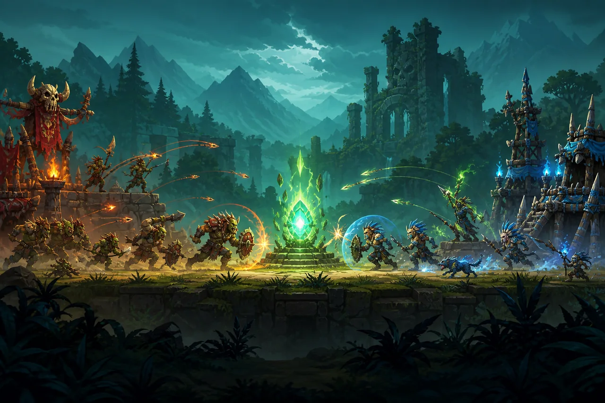

SIDE-SCROLLING TRIBAL WARFARE
部落战2D
围绕能量核心争夺的 2D 横版推进战斗与战役系统
2D 战斗系统设计 / 战役架构 / 数据驱动内容 / 战斗表现
Godot 2D + GDScript + Component System + Data-driven + Shader + Projectile + Campaign Map
部落战是一款 2D 横版推进战斗游戏：双方从各自营地沿同一条战线推进，在持续生成、交战与技能对抗中争夺中央能量核心。战役地图负责把多营地、多关卡的推进关系串起来；单场战斗则专注于单位碰撞、投射物、异常状态与特效反馈，让玩家一眼读懂战线正在向哪一方倾斜。
屏幕越挤，
规则越乱。
横版战场的难点不是把单位放到一条线上，而是让大量角色、弹道、状态和特效在有限屏幕宽度内保持可读：近战碰撞、远程投射物、出生与死亡、击退或减速等状态会同时发生；若规则都塞进单位脚本，新增兵种或技能时会很快失去控制。
分层战斗，
锁定焦点。
以 battlefield 管理一条 2D 战线的出生、推进、交战与结算，以 camp / map 组织多阶段战役；单位通过 component 与 modifier 预设组合能力，投射物、命中、死亡、出生与状态反馈拆到独立模块。能量核心作为横版战场的可争夺目标，统一连接双方推进、阵地防守与胜负反馈；横向镜头只跟随战线焦点，保证关键信息始终在玩家视野内。
解锁战场能力
8/8- ★ACHIEVEMENT 01
2D 横版单战线推进，左右营地出兵并围绕中央目标持续交锋
UNLOCKED - ★ACHIEVEMENT 02
以能量核心作为可争夺的战场级目标，组织推进、防守与局势逆转
UNLOCKED - ★ACHIEVEMENT 03
战役营地与多关卡推进结构，连接地图层和实时战斗层
UNLOCKED - ★ACHIEVEMENT 04
单位、投射物、命中、死亡、出生与状态效果分层管理
UNLOCKED - ★ACHIEVEMENT 05
component + modifier presets 组合单位能力，降低新兵种和技能的实现耦合
UNLOCKED - ★ACHIEVEMENT 06
横向镜头与分层背景服务战线可读性，突出当前交战点与核心目标
UNLOCKED - ★ACHIEVEMENT 07
shader 与 effect 模块提供弹道、护盾、命中、涟漪、尾迹等即时反馈
UNLOCKED - ★ACHIEVEMENT 08
camp001 至 camp005 的战役目录为不同地图、阶段与挑战提供内容组织基础
UNLOCKED
模块背包
每个槽位只负责一种战场能力。
Campaign / Camp
以营地和分关卡组织战役推进、挑战节奏与地图入口
2D Battlefield
管理横向战线中的单位出生、推进、交战、镜头焦点与胜负事件
Energy Core
作为战线中央的争夺目标，连接双方推进节奏与局势反馈
Unit Composition
component 与 modifier 预设组合单位行为、属性和状态变化
Projectile / Hit
投射物、命中、尾迹与伤害反馈独立于具体单位实现
Effect / Shader
出生、死亡、状态、涟漪与基础特效强化横版战场的阅读效率
后续演进 · 以下为路线图，具体阶段以项目说明为准。
选择下一张地图
先让一条横版战线围绕核心目标完整运转
- 左右营地与基础出兵循环
- 单位推进、碰撞、投射物与命中
- 能量核心攻防与胜负结算
- 基础出生、死亡和状态反馈
让战役内容和战术组合持续生长
- 多营地、多地图与阶段化战役
- modifier 预设驱动的兵种与技能组合
- 更丰富的状态、弹道与 shader 表现
- 数据测试与横版战场平衡调优工具链
06 / GAME RULES
胜利条件
- 1P2D 横版镜头服务于战线阅读：玩家应随时看懂单位在推进、僵持还是反攻。
- 2P能量核心不是装饰物，而是把单位推进、营地防守和胜负目标统一起来的规则中心。
- 3P单位规则保持组件化，效果表现保持独立，避免一个兵种脚本承担战斗系统的全部复杂度。
- 4P战役目录与数据配置是内容生产能力的一部分，关卡扩展不应依赖反复改动核心战斗代码。